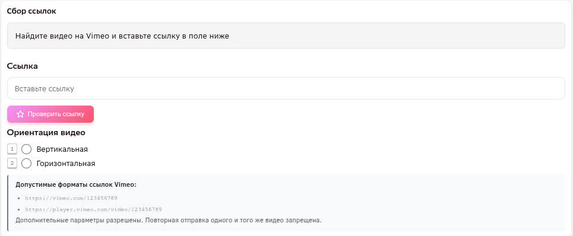
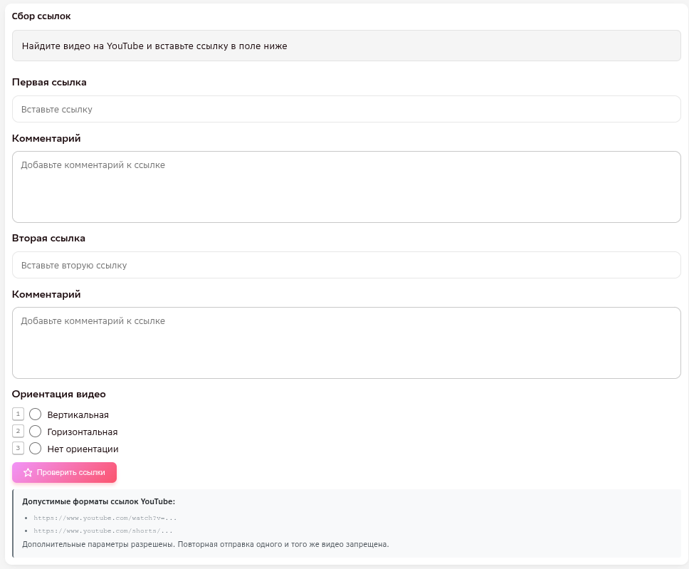
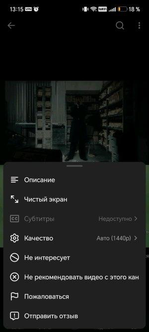

ИНТЕРФЕЙС
Формат рабочего задания
Задания привязаны к источнику видео. Сейчас, с 27.10.2026, сбор идёт через Vimeo (раздел сразу ниже) — собираем только видеоколлажи. Задания с YouTube-ссылками (три формата видео — коллаж, последовательное видео, два отдельных видео) описаны следом, в своём разделе — они относятся к другой конфигурации заявки и могут понадобиться снова.
Vimeo — текущий источник
Собираем только видеоколлажи. Открывая задание, вы видите одно поле для ссылки, два чекбокса ориентации («Вертикальная» / «Горизонтальная» — третьего варианта нет, так как здесь всегда коллаж) и кнопку «Проверить ссылку».

| Поле | Что вносим |
|---|---|
| Ссылка (Vimeo) |
Допустимые форматы ссылок Vimeo:
Дополнительные параметры в ссылке разрешены. Остальные требования — как и к любой ссылке: HD (1280×720) и выше, хорошее качество картинки (не только цифры разрешения), части коллажа — одинакового качества. Повторная отправка одного и того же видео запрещена. |
| Ориентация видео | Чекбокс «Вертикальная» или «Горизонтальная» — по ориентации коллажа. Как определить — см. «Поле «Ориентация видео»» в разделе YouTube ниже (правило одно и то же для обоих источников): по линии разрыва между частями. |
| «Проверить ссылку» | Проверяет точное совпадение — не была ли уже добавлена именно эта ссылка. Повторная отправка запрещена. |
YouTube — три формата видео
Открывая рабочее задание с YouTube-ссылкой, вы видите поля для двух ссылок (у каждой — своё поле комментария), чекбоксы ориентации и кнопку проверки. Сколько ссылок заполнять и какую отмечать ориентацию — зависит от формата видео: три варианта в таблице ниже.
| Формат видео | Ссылок | Ориентация | Комментарий |
|---|---|---|---|
| 🧩 Видеоколлаж — одно видео, разделённое на 2 части | 1 (первая) | Вертикальная / горизонтальная | Не нужен |
| 🎬 Одно видео, «до» и «после» последовательно | 1 (первая) | Нет ориентации | Обязателен — точный тайм-код обоих отрезков |
| 2️⃣ Два отдельных видео — «до» и «после» по разным ссылкам | 2 (обе) | Нет ориентации | Обязателен в обоих полях — точный тайм-код в каждом |
С 15.10.2026 заказчик разрешил кроме видеоколлажа ещё два формата (только для YouTube-ссылок) — примеры ниже.
Будь то одна ссылка на коллаж, одна ссылка на последовательное видео или две ссылки на отдельные видео — в сумме это одно задание из 1000 нужных видео.

| Поле | Что вносим |
|---|---|
| Первая / вторая ссылка |
Первая ссылка — заполняется всегда: сюда идёт ссылка на видеоколлаж 🧩, на последовательное видео 🎬, либо на видео «до» — если формат 2️⃣ «два отдельных видео». 2️⃣ Вторая ссылка — только для формата «два отдельных видео» (видео «после»); для двух других форматов остаётся пустой. Для каждой заполненной ссылки — одни и те же технические требования:
|
| Комментарий |
У каждой ссылки — своё поле комментария.
|
| Ориентация видео |
Один из трёх вариантов — обязателен: без отмеченного чекбокса задание не отправится. Для коллажа выставленная ориентация учитывается при оценке задания. Как определить ориентацию коллажа (FAQ заказчика от 09.10.2026): по линии разрыва между частями — если линия горизонтальная (части друг над другом), ориентация горизонтальная; если линия вертикальная (части рядом), ориентация вертикальная. Примеры обеих ориентаций ниже. |
| «Проверить ссылки» | Проверяет точное совпадение каждой заполненной ссылки — не была ли уже добавлена именно она. Если да — задание не отправится, нужно подставить другую ссылку. «То же самое движение» на другом видео кнопка не ловит — см. «Повторы движения». |
На видео есть сегмент движения с применением эффектов с 10 по 12 секунды, затем идёт фрагмент с тем же движением с 20 по 22 секунды.
На первом видео показаны кадры со съёмок на фоне зелёного экрана. Действие происходит в пределах с 42 по 46 секунды.
На втором видео показаны кадры из фильма, где то же действие происходит в пределах с 32 по 35 секунды.
Линия разрыва вертикальная (части коллажа рядом друг с другом) — ориентация вертикальная.
Линия разрыва горизонтальная (части коллажа друг над другом) — ориентация горизонтальная.
Комментарий валидатора: низкое качество. Проверяйте картинку целиком, а не только цифры разрешения.
Замечание заказчика: у видео на этой заявке не должно быть такого плохого качества.
Комментарий валидатора: видео должно быть в разрешении HD (1280 на 720), и обе части коллажа должны быть одинакового качества.
На шортсах разрешение не всегда видно сразу. Откройте меню (три точки сверху справа) → «Качество» — там указано фактическое разрешение видео.

КРИТЕРИИ
Критерии отбора видео
Критерии одинаковы для рабочих заданий и экзамена. Общая логика таблиц: слева — что подходит, справа — что не подходит. Группа «Коллаж: границы и масштаб» ниже — только про формат видеоколлажа; для двух других форматов видео (см. «Формат рабочего задания») вместо неё — комментарий с тайм-кодом. Остальные группы действуют на все форматы одинаково.
Не собираем видео со сценами курения, распития алкогольных напитков, употребления запрещённых веществ, сценами насилия (кроме постановочных драк — они допустимы) и т. п. — независимо от остальных критериев ниже.
Длительность видео и движения
| Параметр | Подходит | Не подходит |
|---|---|---|
| Длительность видео | ✅ Не длиннее 30 минут. | ❌ Длиннее 30 минут. |
| Длительность движения | ✅ От 2 до 60 секунд. | ❌ Короче 2 секунд или длиннее 60 секунд. |
| Склейки в момент движения | ✅ На всём протяжении движения (какой бы ни была его длительность — от 2 до 60 секунд) — без склеек и переходов. | ❌ Внутри движения, независимо от его длительности, есть склейка или переход. |
| Завершённость движения | ✅ Движение завершено (не обрывается), выполняется по одной и той же траектории и максимально идентично между «до» и «после» (в обеих частях коллажа, на обоих видео или на обоих отрезках одного видео — зависит от формата), синхронно по времени — допустимо лишь небольшое отставание. | ❌ Движение обрывается на середине, траектория между «до» и «после» заметно различается, или они рассинхронны (заметная задержка одной стороны относительно другой). Пример — ниже. |
Комментарий валидатора: движения на коллаже рассинхронны (допустимо лишь небольшое отставание).
Человек в кадре
| Параметр | Подходит | Не подходит |
|---|---|---|
| Кто выполняет движение | ✅ Человек, антропоморфное существо (например, робот) — прямоходящее, с глазами и конечностями как у человека — или млекопитающее. Ко всем применяются одни и те же правила (FAQ заказчика от 27.10.2026). | ❌ Движение выполняет неживое (не человек, не человекоподобное существо и не млекопитающее), при этом движения не плавные, а урывками. Пример от заказчика — ниже. |
| Активность движения | ✅ Активное движение — именно такие движения нужно собирать. | ❌ Неактивное движение: человек стоит или сидит и просто покачивается, переминается; простая ходьба и обычный бег (без параллельных действий) тоже не подходят. Из инструкции: поворот головы, один взмах рукой, кивание головой — тоже не считаются активными движениями. Примеры от заказчика — ниже. |
| Различимость людей | ✅ Человек, выполняющий движение, хорошо различим. | ❌ Человек виден издалека, в том числе один человек в толпе, снятый издалека (например, съёмка матча с трибун). Также не подходит, если человек сильно затемнён — виден только силуэт, не видно черт лица. Пример — ниже. |
| Несколько человек в кадре | ✅ Если несколько человек на переднем плане — все выполняют одинаковое движение. Человек на заднем плане может выполнять другое движение, если человек на переднем плане выполняет целевое движение. | ❌ Несколько человек на переднем плане выполняют разные движения — недопустимо. |
| Текст / предметы / выход за кадр | ✅ Небольшое перекрытие текстом или предметом; частичный выход человека за пределы кадра во время движения. Человек должен быть виден полностью. Уточнение заказчика: допустимо, если человек виден по пояс — при условии, что голова тоже видна. | ❌ Перекрытие или выход за кадр мешают увидеть человека полностью (например, не видна голова, или человек виден только ниже пояса). |
| Рамки | ✅ Допустима декоративная рамка по краю кадра — сбору не мешает. | ❌ Рамка прозрачная и при этом повторяет движения из самого видео. Действует одинаково в рабочих заданиях и на экзамене. |
| Вотермарки | ✅ Допустимы, если не перекрывают человека, выполняющего движение. | ❌ Вотермарка перекрывает человека или его движение. |
Движение выполняет неживое, и движения не плавные, а урывками. Такое видео к сбору не подлежит (см. «Кто выполняет движение» выше).
Комментарий валидатора: на видео люди либо видны не полностью (даже не по пояс), либо в кадре много людей, выполняющих разные движения. Если в кадре несколько человек на одном плане — они должны двигаться одинаково.
Комментарий валидатора: человек слишком маленький.
Из инструкции: пример, где человек сильно затемнён (виден только его силуэт, нет черт лица) — не берём.
Замечание заказчика: обрезается голова — такое тоже не стоит прикладывать.
Человек просто стоит, переминается и слегка покачивается — движение неактивное, такое видео не подходит (см. «Активность движения» выше).
Замечание заказчика: видео, где человек просто идёт, брать не стоит.
Комментарий валидатора: бег не собираем (обычный, без параллельных действий).
Из инструкции: примеры, где движения не считаются активными — на них почти не совершается движений (например, лёгкий поворот головы или кивок). Такое не собираем.
Коллаж: границы и масштаб
Только для формата видеоколлажа — одно видео, разделённое на 2 части. Для последовательного видео и двух отдельных видео эта группа не действует.
| Параметр | Подходит | Не подходит |
|---|---|---|
| Граница между частями | ✅ Граница тонкая, неподвижная и проходит ровно посередине — обе половинки равны друг другу. Линия может быть и горизонтальной, и вертикальной — зависит от ориентации самого коллажа, оба варианта нормальны. | ❌ Граница толстая либо проходит не посередине (половинки не равны); либо граница подвижна — сдвигается в кадре (заметно, например, по смещению потолка на фоне). Пример — ниже. |
| Масштаб частей | ✅ Масштаб человека одинаков в обеих частях коллажа. Ориентир заказчика: если в одной части человек виден в полный рост, во второй части он должен быть не меньше половины своего размера там же. | ❌ Масштаб частей разный — человек в одной части заметно мельче (например, вдвое меньше своего размера в другой части, как в корнер-кейсах ниже). |
| Отсутствие зелёного/синего экрана | ✅ Допустимо — если в кадре «до» эффекта зелёного/синего фона не видно, это не мешает сбору. | — |
| Состав кадра | ✅ Видео состоит только из двух частей коллажа (до и после эффекта), движение — только внутри них. | ❌ Движение происходит не только на частях коллажа, но и за его пределами — недопустимо. Видео должно состоять только из двух частей коллажа. Пример от заказчика — ниже. |
| Реальная съёмка хотя бы в одной части | ✅ Одна из частей — видео с реальным зелёным/синим экраном, без спецэффектов (совпадает с определением «до» эффекта). | ❌ Обе части нарисованы/сгенерированы — недопустимо, нужна хотя бы одна часть без эффектов. Пример от заказчика — ниже. |
| Расположение в частях | ✅ Обе части идентичны по расположению: человек и движение находятся в одном и том же месте кадра в обеих частях. | ❌ Зеркальный коллаж — одна часть отражена относительно другой (то, что в одной части слева, в другой справа). |
Между частями коллажа — заметная толстая граница. Такое видео к сбору не подлежит.
Из инструкции (27.10.2026): сбору не подлежат видео, где граница между коллажами подвижна — видно по движению потолка на заднем плане.
Масштаб частей коллажа не совпадает. Такое видео к сбору не подлежит.
Замечание заказчика: части коллажа не равны — такое нельзя.
Замечание заказчика: части коллажа не равны — такое нельзя.
Комментарий валидатора: частей коллажа должно быть две, а здесь остальные части кадра просто размыты.
Замечание заказчика: движение происходит не только на частях коллажа, но и за его пределами — такое недопустимо (на фоне коллажа не должно происходить посторонних движений). Видео должно состоять только из двух частей коллажа (до и после эффекта).
Замечание заказчика: примеры, где на одной из частей коллажа люди находятся слишком далеко — не берём. Люди здесь примерно вдвое меньше своего размера во второй части.
Замечание заказчика: примеры, где на одной из частей коллажа люди находятся слишком далеко — не берём.
Вопрос ассессоров: является ли такая граница коллажа приемлемой? Ответ заказчика: да, приемлемая, но не шире.
Замечание заказчика: оба коллажа нарисованы — необходимо, чтобы на одной части коллажа было видео с реальным зелёным экраном, без спецэффектов.
Съёмка и обработка
| Параметр | Подходит | Не подходит |
|---|---|---|
| Скорость | ✅ Естественная скорость движения. | ❌ Искусственные замедления и ускорения — недопустимы. |
| Движение камеры (зум, вращение) | ✅ Допустимо на частях коллажа (приближение, отдаление, вращение), если траектория самого движения на обеих частях идентична. Действует одинаково в рабочих заданиях и на экзамене. | — |
| Повторы движения | ✅ Движение впервые собирается в проекте — за этим следит сам исполнитель. | ❌ Такое же движение во всём проекте не должно повторяться — «картинка может быть разной, но движение повторяться не должно» (из комментария валидатора). Общего списка уже собранных движений нет — кнопка «Проверить ссылку» ловит только повтор точно такой же ссылки. Уточнение заказчика (30.09.2026): если один и тот же ролик встречается под другой ссылкой — валидатор распознаёт это вручную при проверке и засчитывает как ошибку, даже если кнопка повтор не поймала. Похожее движение на разных роликах по-прежнему отслеживает сам исполнитель. Пример — ниже. |
| Происхождение видео | ✅ Видео с реальными компьютерными эффектами (CGI) — то, что и собираем: примеры 1–4 ниже. | ❌ Видео полностью сгенерировано нейросетью — например, по текстовому запросу. Также не подходит мультипликация/анимация — рисованный персонаж вместо компьютерного эффекта на реальном видео. Примеры от заказчика — ниже. |
| Технический артефакт (распад на полосы) | ✅ Объекты и человек в кадре видны чётко, без искажений. | ❌ Объекты в кадре распадаются на полосы — недопустимо. Действует одинаково в рабочих заданиях и на экзамене. |
Комментарий валидатора: движение повторилось (картинка может быть разной, но движение повторяться не должно), дубль.
Такое видео недопустимо: оно целиком сгенерировано нейросетью, хотя по жанру мимикрирует под настоящее «CGI до/после». Отличайте его от примеров 1–4 ниже — там реальные киноспецэффекты, и это именно то, что нужно собирать.
Замечания заказчика к этому ролику: сегмент с движением должен длиться минимум 5 секунд (здесь — 3 секунды, см. «Длительность движения» выше); не берём видео, созданные с помощью ИИ.
С 02.10.2026 минимум — 2 секунды, так что по длительности ролик теперь прошёл бы, но он по-прежнему не подходит: видео создано ИИ.
Замечание заказчика: приняли как спорный случай, теперь точно можем сказать, что анимацию не берём.
ПРИМЕРЫ
Разбор примеров из инструкций
Семь примеров из официальных инструкций заказчика — с видео и вердиктом.
Видео длится менее 30 минут, идентичное движение — с 18 по 41 секунду (5 секунд и больше), не перекрывается предметами или наложениями, половинки коллажа равны. Заказчик уточняет: простое движение в начале ролика (проходка, примерно до 5-й секунды) — не тот пример, который нужно собирать.
Видео длится менее 30 минут, движение — в пределах 5 секунд, наложения не мешают, половинки равны, граница между частями тонкая. Зелёный/синий экран на кадре «до» не виден — это не проблема, эффект CGI всё равно показан коллажем.
Видео длится менее 30 минут, идентичное движение происходит в пределах 5 секунд, наложения не перекрывают движение, половинки равны, но коллаж состоит не из двух частей — за пределами основного коллажа на фоне дублируются движения (несмотря на то, что они размыты, такое видео не подлежит сбору).
Обновлено заказчиком 09.10.2026 — раньше этот же ролик был положительным примером («для сбора подходят и вертикальные коллажи»); этот факт по-прежнему верен, просто теперь у примера другой акцент.
Видео длится менее 30 минут, движение — в пределах 5 секунд, наложения не мешают, половинки равны. На верхней части коллажа есть движение камеры, а на нижней нет — это различие сбору не мешает.
Видео длится менее 30 минут, но само движение длится менее 5 секунд (с 3:07 по 3:11), между частями коллажа — толстая граница, на правом кадре есть склейка.
С 02.10.2026 минимум длительности движения — 2 секунды, так что по длительности ролик теперь прошёл бы, но он по-прежнему не подходит из-за толстой границы и склейки.
Видео слева после применения эффекта считается наложением; также не подходит по разрешению — оно слишком мало по отношению к масштабу видео «до» эффекта.
Половинки коллажа не равны друг другу: на верхней половинке видна только часть человека, а масштаб в целом слишком маленький.
ПЕРЕД ОТПРАВКОЙ
Проверьте себя
- Ссылка (или обе ссылки) ведёт на видео в разрешении HD (1280×720) и не длиннее 30 минут — и картинка в целом хорошего качества, не смазанная.
- Отмечен чекбокс ориентации — вертикальная/горизонтальная для коллажа, либо «нет ориентации» для последовательного видео или двух отдельных видео.
- Если видео — не коллаж (последовательное или два отдельных), в комментарии указан точный тайм-код идентичного движения.
- Нажата кнопка «Проверить ссылки», чтобы исключить дубли.
- Движение выполняет человек или человекоподобное существо (прямоходящее, с глазами и конечностями как у человека), а не неживое.
- Движение активное — человек не просто стоит, сидит, покачивается или идёт.
- Движение целиком, без склеек — завершено и идентично в обеих частях коллажа.
- Граница между частями тонкая и по центру, масштаб частей совпадает.
- Видео состоит только из двух частей коллажа, движение не выходит за их пределы.
- Хотя бы одна часть — реальная съёмка, без эффектов.
- Видео не сгенерировано нейросетью и не является мультипликацией/анимацией.
- Коллаж не зеркальный — расположение в обеих частях одинаковое.
- Такое движение ещё не собиралось в проекте.
- В ролике нет сцен курения, алкоголя, запрещённых веществ, насилия (кроме постановочных драк) и т. п.